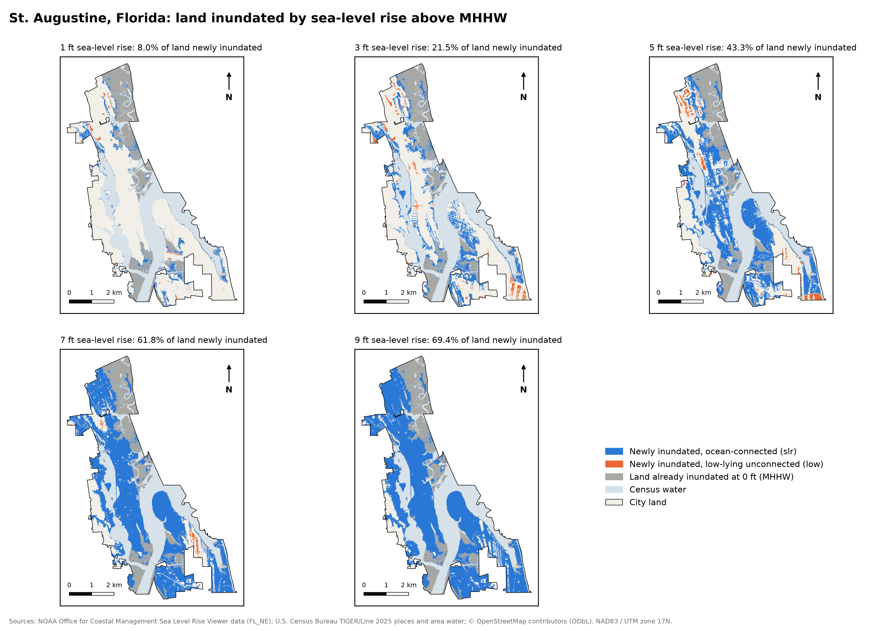
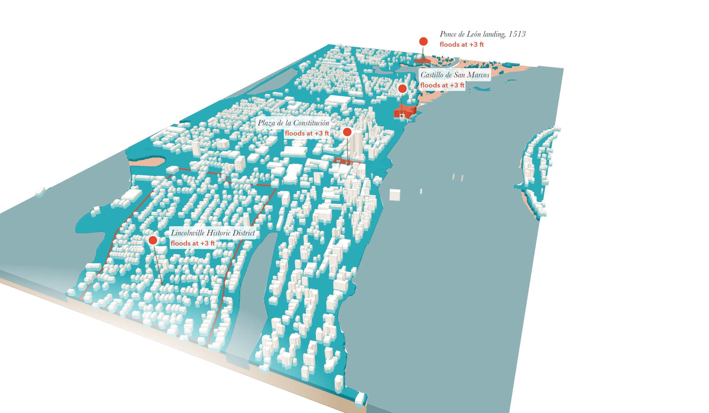
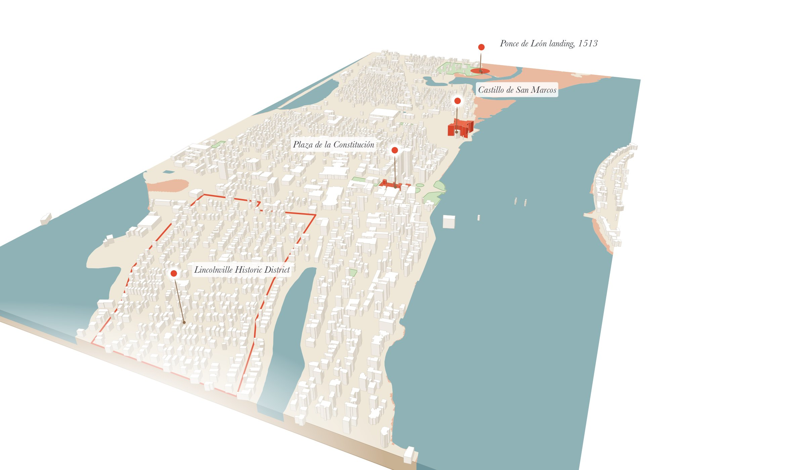
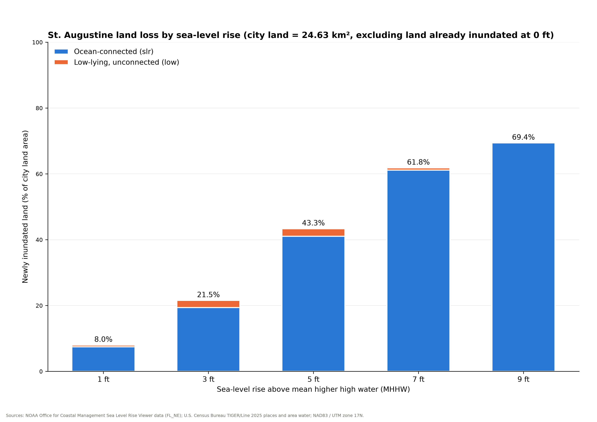
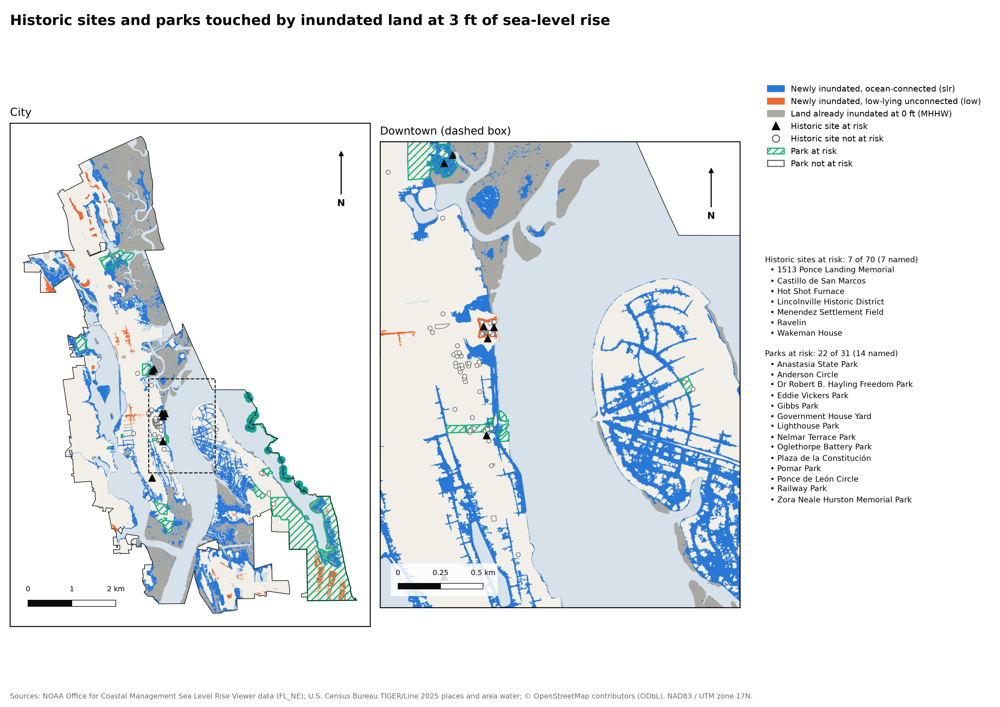

Figure 1 · A4 landscape · vector PDF 11.9 MB
Inundation at 1, 3, 5, 7 and 9 ft

Same extent and scale on every map. Grey is land already inundated at 0 ft. Blue and orange are new inundation at that level.
At 3 ft of sea-level rise, a fifth of the city's land floods beyond today's high-tide line, and the water reaches the Castillo de San Marcos and the Plaza de la Constitución.
The old town today against the same streets after sea-level rise. Drag the handle, or focus it and use the arrow keys. 2.5D view up the bayfront from the south; heights and water exaggerated five times.


Share of the city's 24.63 km² of land that floods at each level, not counting the 5.68 km² (mostly tidal marsh) already below today's mean higher high water.
slr)
Low-lying, not connected to the ocean (low)
ALAND figure
Same extent and scale on every map. Grey is land already inundated at 0 ft. Blue and orange are new inundation at that level.

The unconnected low share rises and then falls: as water connects a low-lying area to the ocean, NOAA reclassifies it as slr.

“At risk” means any part of the site or park touches inundated land. OSM tags many downtown buildings without historic=*, so these counts are a lower bound.
slr and low layers are clipped, dissolved and intersected with land at each level.slr never shrinks with level, and slr and low never overlap.low areas actually flood depends on drainage and groundwater.